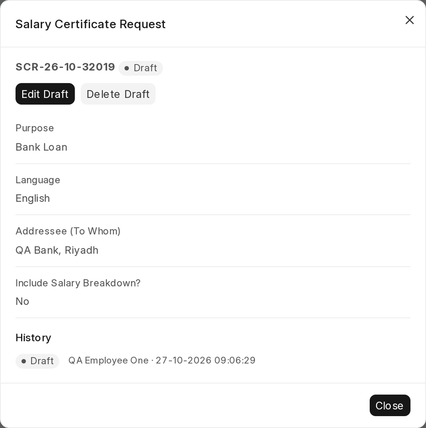
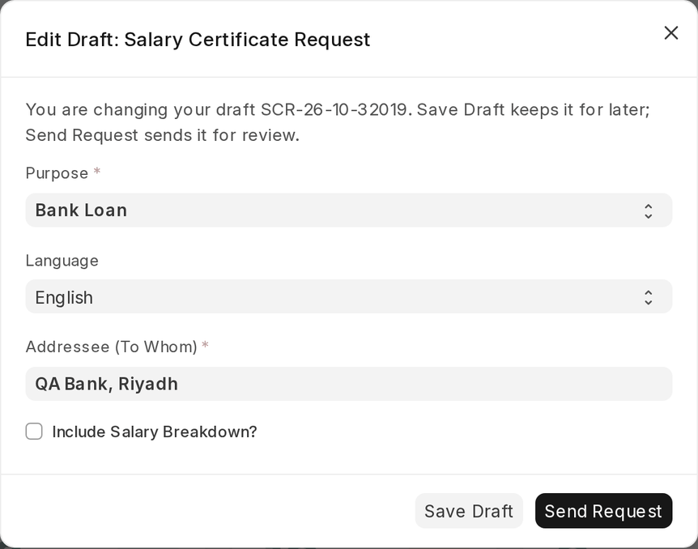
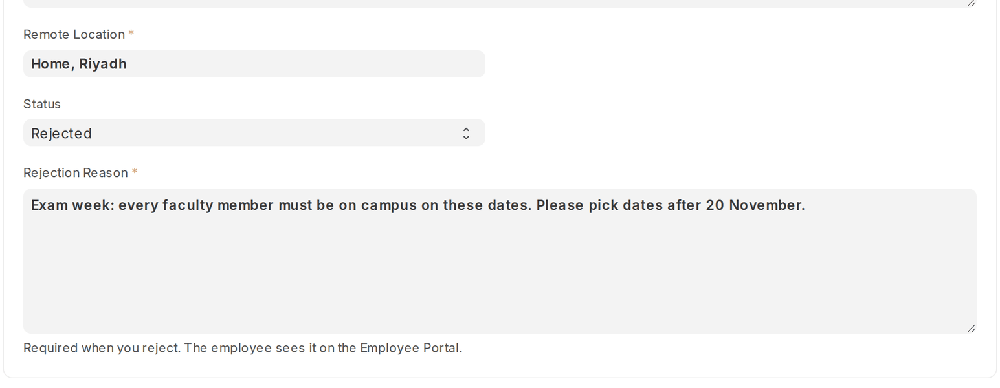
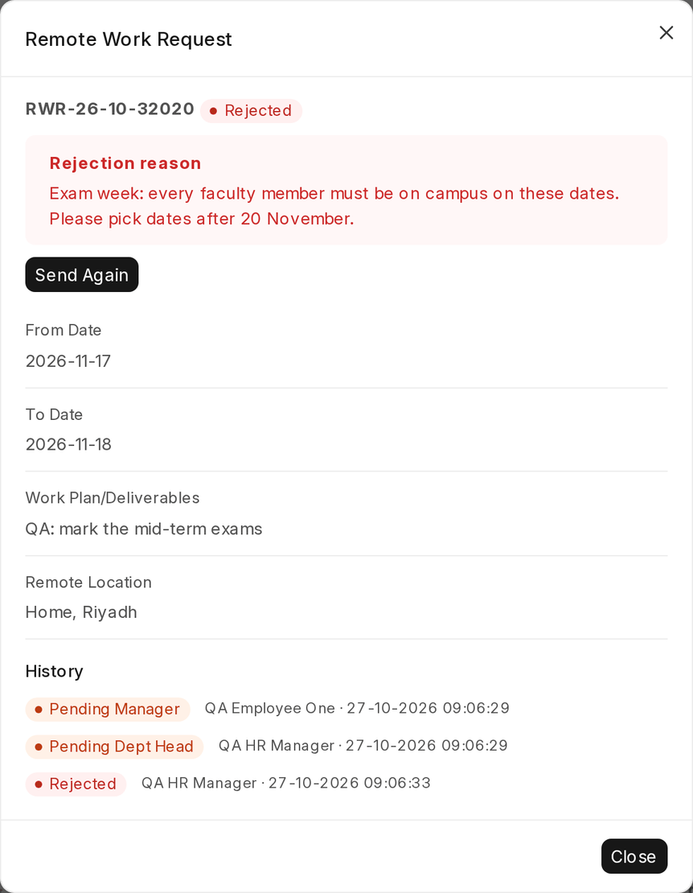
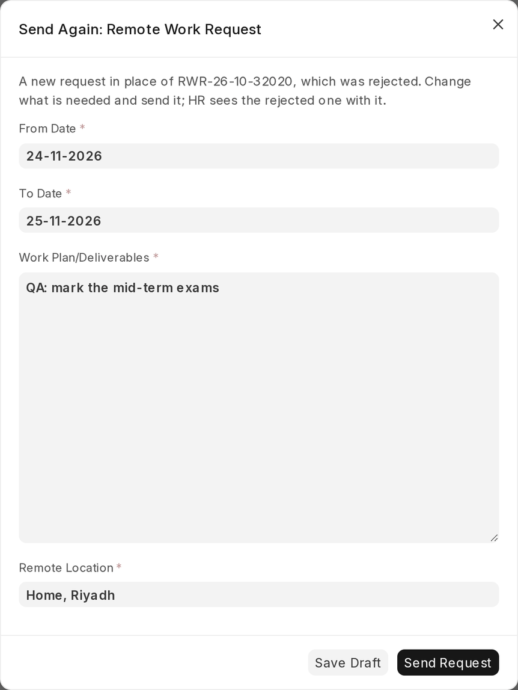
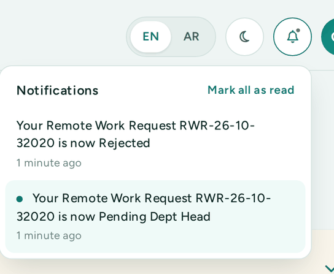

Al-Riyada College for Health Sciences · Medical HRMS
Round 2: What's New and How to Test
Only what changed in this round: drafts, rejection reasons, the history of each request, notifications, sending a rejected request again, and the Instructor form fix. The full User Guide stays the reference for everything else.
ForThe testing team (and HR, to see what is new).Test cases16 cases: in the Test Cases workbook, filter the Round column on Round 2. They are listed in section 5.Version27 October 2026 · branch developBuilt byAbdul Hakeem (Medical HRMS and Jameah lead)See alsoUser Guide (updated for Round 2) · Installation and Setup Guide
1What is new
Change
Who sees it
Tracker
Test cases
Drafts can be changed, sent or deleted
Employees, on the Employee Portal
HR-16
TC-ESS-17, 18
A reason is required to reject
HR and leave approvers give it; the employee reads it
HR-25
TC-APR-02, 09, 11, TC-ESS-19
History of each request
Employees: every step with who and when
HR-25
TC-ESS-19
Notifications (bell, and e-mail on the live server)
HR: new requests. Employees: every later step
HR-25
TC-APR-10, TC-ESS-22, 23
Send a rejected request again
Employees send it; HR sees which request it replaces
HR-16
TC-ESS-20, 21, TC-APR-12, TC-LV-18
Instructor and Academic Advisor forms save after picking an Employee
Academic Affairs, whoever links staff records
B-26, B-56 (HR-48)
TC-EMP-13, 14
Amount limits say SAR (not AED)
HR, Finance
HR-24
TC-APR-13
Nothing else changed: Round 1 test cases keep their results, and only TC-APR-02 (rejecting a Training Request) has new steps, because a reason is now required.
2Before you start
Ask the developer to confirm that the test site has the Round 2 update (branch develop of 27 October, with bench migrate). On the HR form of any request, a Rejection Reason field appears when the Status is set to Rejected: that shows the update is in.
Logins (sheet Test Accounts): an HR Manager, an employee whose leave approver you can also log in as, and for TC-EMP-13 / 14 a login that can edit Instructors and see Employees (for example Education Manager + HR User, or System Manager).
Open Medical_HRMS_Jameah_Test_Cases.xlsx, sheet Test Cases, filter Round = Round 2. Record each result there as in Round 1; bugs go in Bug Report with the date, time, page address and exact message.
E-mail on the test copyThe test copy cannot send e-mail (bug B-25: the e-mail account password must be entered again on the server). Notifications still appear in the bell. Mark TC-ESS-23 (notification e-mail) Blocked unless you test on a server where e-mail works.
3How to test each change
3.1 Drafts: change, send or delete
Until now a draft could only be saved. Now the employee opens it again:
Employee Portal → click N request(s) on the card (for example Salary Certificate) → click the draft.
Edit Draft opens the form with what was saved. Change it, then Save Draft (keep it) or Send Request (send it for review). The request keeps its number.
Delete Draft → Yes removes it. A request that was already sent cannot be changed or deleted by the employee.

Figure 1. A draft: Edit Draft and Delete Draft.

Figure 2. Edit Draft opens the form filled in.
3.2 Rejecting with a reason (HR)
Open a pending request (HR Portal → the request card → Open).
Set Status to Rejected. The field Rejection Reason appears and is required.
Click Save without a reason: Missing Fields: Rejection Reason, nothing is saved. Write the reason and save.
If a rejected request is set back to a pending step, the reason is cleared (it no longer applies).

Figure 3. The request form with Status Rejected and the required Rejection Reason.
This applies to every request with a Rejected step: Permission, Remote Work, Leave Plan, Salary Certificate, Overtime, Training, Medical Allowance, Company Car, Contract Renewal, and Leave Application.
3.3 What the employee sees: reason, history, Send Again
The employee opens the request (Recent Requests → View details, N request(s) on a card, or the notification):
Rejection reason: HR's text, in a box under the status.
History: every step with the person and the time (for example Pending Manager, then Rejected).
Send Again: opens a new request filled in from the rejected one. After sending, the new request says Sent again in place of … and the rejected one says Sent again as …. A rejected request can be sent again once.

Figure 4. A rejected request: reason, Send Again, history.

Figure 5. Send Again: a new request, filled in.
On the HR side, the new request shows Sent Again From with a link to the rejected one and its reason (TC-APR-12).
3.4 Notifications
When
Who is told
Text
An employee sends a request
Every HR User and HR Manager login
New <request> from <employee> (<number>)
HR moves it to another step, approves, issues or rejects it
The employee
Your <request> <number> is now <status> (with the reason when rejected)
A draft is saved or changed
Nobody
—
Notifications appear under the bell at the top of both portals (a red dot shows new ones). Clicking an employee's notification opens that request on the Employee Portal. On a server where e-mail works, the same text is also e-mailed. Leave applications keep their own e-mails to the leave approver and the employee (HR Settings, Checklist CL-40).

Figure 6. The employee's bell after a rejection.
3.5 Leave: reason and Apply Again
The leave approver who rejects a Leave Application must fill Rejection Reason before saving and submitting (TC-APR-09).
The employee sees the reason in the application's details and can click Apply Again to send a new application, filled in from the rejected one (TC-LV-18).
3.6 Instructor and Academic Advisor: linking an Employee
Picking the Employee on an Instructor form used to stop the save with Could not find Gender: Gender::1, Department: …, because the form copied the Employee's values into its own lists, which hold different values. Now the matching Gender and Department are filled in instead, and the form saves. The Academic Advisor form had the same problem with Gender and is fixed too.
Open an Instructor that has no Employee yet (or clear the Employee field).
Pick the person's Employee record. Department fills in when that department exists in the academic list; Gender fills in too, or, for a login that cannot open the Gender list (only System Managers can), when you save.
Save: no error, and Gender is set.
3.7 Amounts in SAR
The messages for the approval limits on training, travel and expense claims now say SAR, for example Training programs exceeding SAR 10,000 require Department Head approval. (TC-APR-13).
4Not in this round, and known limits
E-mail: works only once the e-mail account is fixed on the server (B-25, HR-47). The bell works everywhere.
Who gets new-request notifications: every HR User and HR Manager login, as built. If HR wants a smaller group, that is a decision (DEC-16).
Update My Data and Leave Return have no Rejected step, so they have no rejection reason or Send Again (unchanged). Applying an approved data correction to the Employee record is HR-17, planned for a later round.
Who approves each step (manager, department head, Finance) is still recorded by HR in the Status; automatic routing waits for the approver list (DEC-09, HR-24).
The phone example on the public application form (+94 …) is being changed to a Saudi number by Fathir (HR-77); it is not part of this round's tests.
5Round 2 test cases
Full steps and expected results are in the Test Cases workbook (filter Round = Round 2).
Already checked by the developerThe automated browser tests ran the same steps for the cases marked with an automated test in the workbook (column Last automated run). Please test them anyway: they can pass there and still fail for you.
ID
Scenario
Login
Priority
TC-ESS-17
Change a draft and send it
Employee
High
TC-ESS-18
Delete a draft
Employee
Medium
TC-APR-02
Reject a Training Request with a reason (changed)
HR Manager
High
TC-APR-09
Rejection reason on every request type and on leave